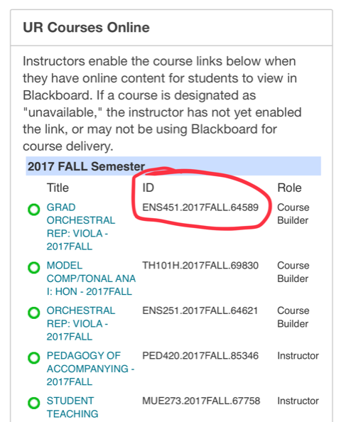

This is a web-based form that will ask for the course IDs (including which course is the parent course) so that we have all of the information needed to quickly submit merge requests to the automated system. Using this form also allows a support ticket to be created, so that we can track the progress of your merge request.
If you do not know what a course ID is, it looks something like this:
CRSE101.SPRING2018.12345
The easiest way to locate your current course IDs is to look in your UR Courses Online module on the Main Tab. Here is a screenshot with the course ID highlighted, on the Main tab within the UR Courses Online module:
